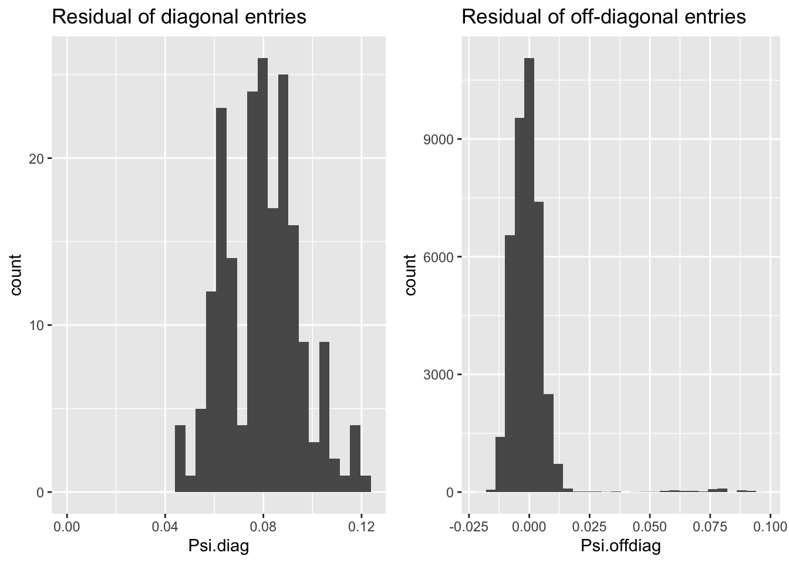
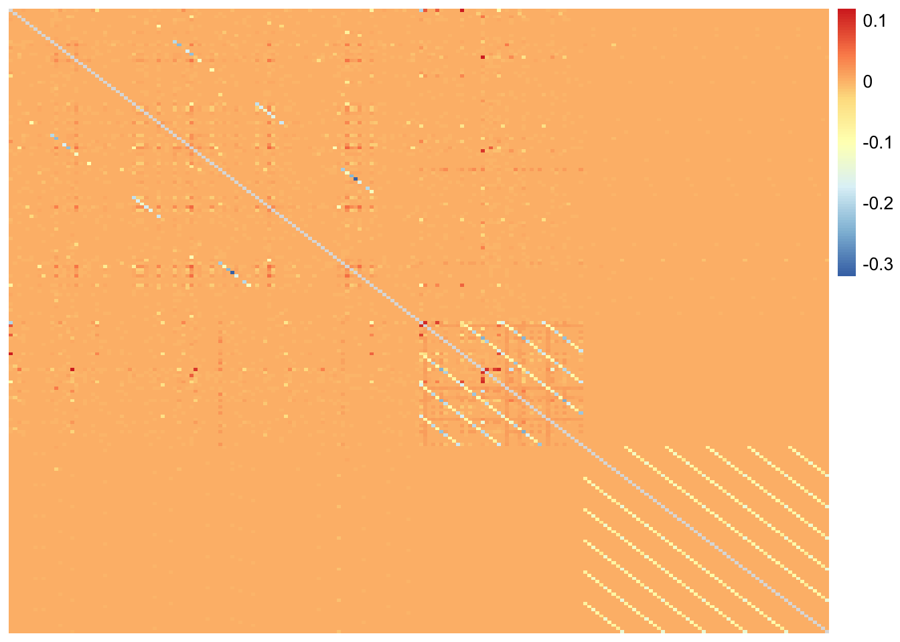
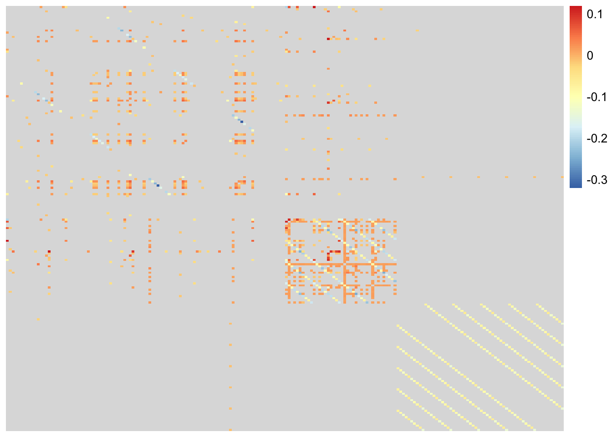
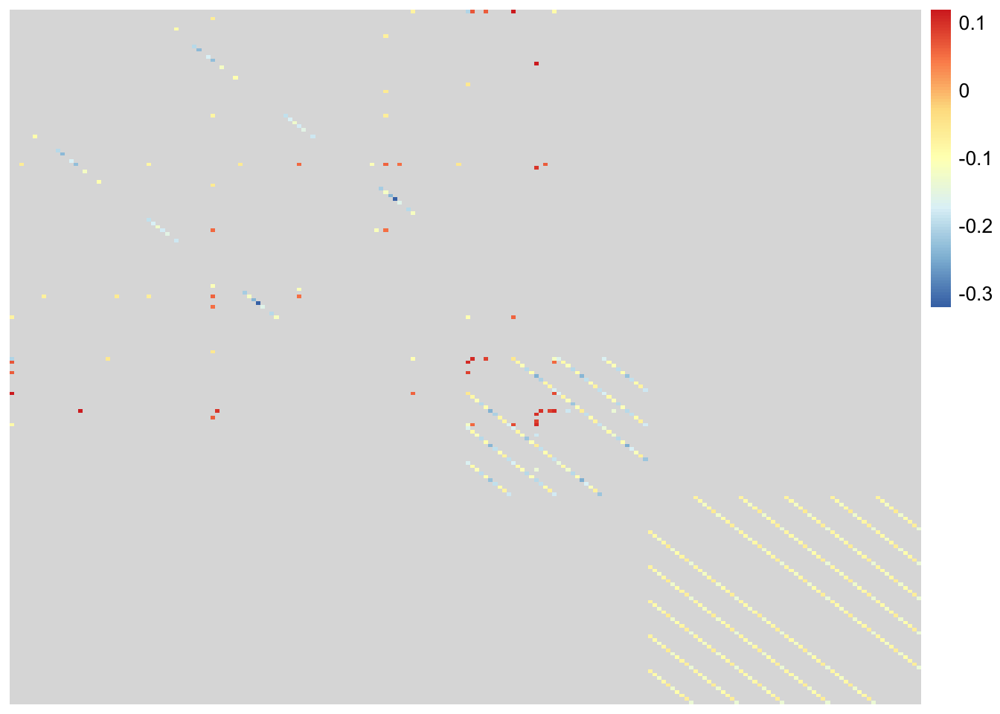
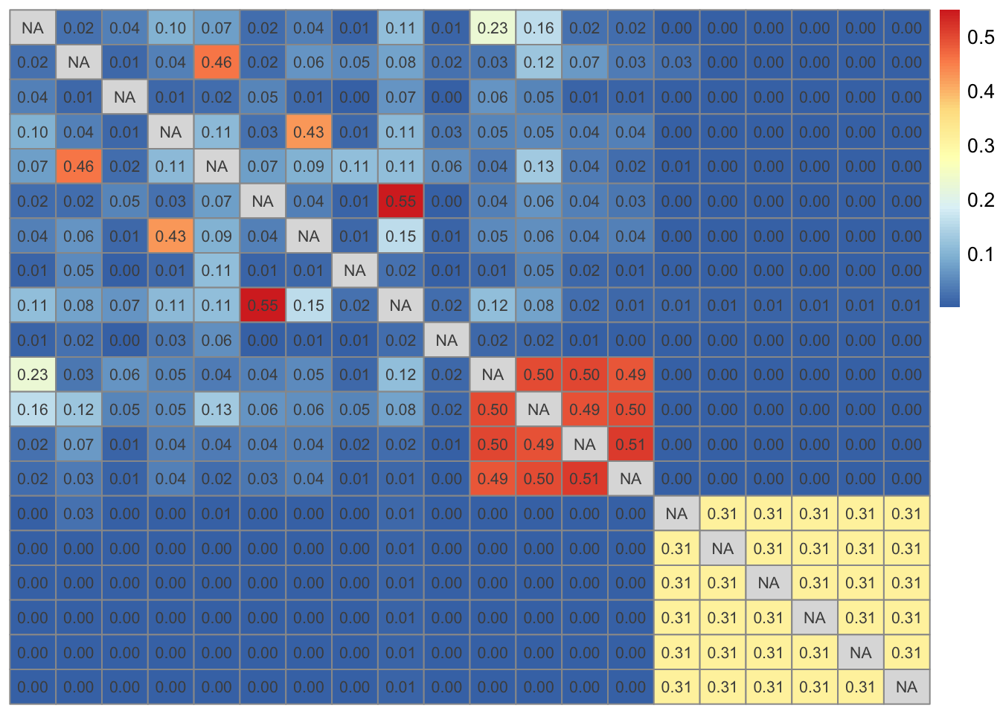

Last updated: 2020-03-24
Checks: 7 0
Knit directory: aaint/
This reproducible R Markdown analysis was created with workflowr (version 1.6.0). The Checks tab describes the reproducibility checks that were applied when the results were created. The Past versions tab lists the development history.
Great! Since the R Markdown file has been committed to the Git repository, you know the exact version of the code that produced these results.
Great job! The global environment was empty. Objects defined in the global environment can affect the analysis in your R Markdown file in unknown ways. For reproduciblity it’s best to always run the code in an empty environment.
The command set.seed(20200315) was run prior to running the code in the R Markdown file. Setting a seed ensures that any results that rely on randomness, e.g. subsampling or permutations, are reproducible.
Great job! Recording the operating system, R version, and package versions is critical for reproducibility.
Nice! There were no cached chunks for this analysis, so you can be confident that you successfully produced the results during this run.
Great job! Using relative paths to the files within your workflowr project makes it easier to run your code on other machines.
Great! You are using Git for version control. Tracking code development and connecting the code version to the results is critical for reproducibility. The version displayed above was the version of the Git repository at the time these results were generated.
Note that you need to be careful to ensure that all relevant files for the analysis have been committed to Git prior to generating the results (you can use wflow_publish or wflow_git_commit). workflowr only checks the R Markdown file, but you know if there are other scripts or data files that it depends on. Below is the status of the Git repository when the results were generated:
Ignored files:
Ignored: .Rhistory
Ignored: .Rproj.user/
Ignored: analysis/.Rhistory
Untracked files:
Untracked: analysis/STRUCTURE.Rmd
Untracked: analysis/flash_pdz.Rmd
Untracked: analysis/ideas.Rmd
Untracked: analysis/mm_20200311.Rmd
Untracked: analysis/temp.Rmd
Untracked: analysis/test.Rmd
Untracked: code/convert_files_mat_to_text.R
Untracked: code/wflow_commands.R
Untracked: data/HG_FLU_hmmerbit_plmc_n5_m30_f50_t0.01_r1-565_id100_b282.a2m
Untracked: data/PDZ
Untracked: data/PDZ.mat
Untracked: data/PF00014_full_length_sequences.fasta
Untracked: data/admixture/
Untracked: data/align300_q10
Untracked: data/align300_q10.mat
Untracked: data/testdata1
Untracked: data/testsample
Untracked: data/testsample.csv
Untracked: data/testsample_factor
Untracked: output/structure/
Untracked: output/test/
Unstaged changes:
Modified: analysis/flash.Rmd
Note that any generated files, e.g. HTML, png, CSS, etc., are not included in this status report because it is ok for generated content to have uncommitted changes.
These are the previous versions of the R Markdown and HTML files. If you’ve configured a remote Git repository (see ?wflow_git_remote), click on the hyperlinks in the table below to view them.
| File | Version | Author | Date | Message |
|---|---|---|---|---|
| Rmd | e0b8557 | Joonsuk Kang | 2020-03-24 | initial commit for flashier and flash_omega |
In high dimensional setting, low-rank covariance matrix \(\Sigma\) or sparse precision matrix \(\Omega=\Sigma^{-1}\) assumption is made to estimate either covariance or precision matrix.
flash makes a low-rank covariance matrix assumption and falls into the category of sparse factor analysis. Suppose \(X=LF+E\) where \(X\) is a \(N \times p\) data matrix, \(L\) a \(N\times k\) loading matrix, \(F\) a \(k\times p\) factor matrix, and \(E\) a \(N \times p\) error matrix. Assuming independence between \(L\) and \(E\), the covariance \(\Sigma=cov(X)=cov(LF+E)=F^Tcov(L)F+cov(E)\). For \(\Lambda_L=cov(L)\), \(\hat{\Lambda}_L=\frac{1}{N}\sum_{i=1}^N (L_i-\bar{L})^T(L_i-\bar{L})\) where \(L_i\) is the \(i\)-th row of the loading matrix \(L\) (the loading for an individual \(i\)) and \(\bar{L}=\frac{1}{N}\sum_{i=1}^N L_i\). Also let \(\Psi\) be \(cov(E)\).
Using Woodbury’s matrix identity, the precision matrix \(\Omega=\Sigma^{-1}=(F^T\Lambda_LF+\Psi)^{-1}=\Psi^{-1}-\Psi^{-1}F^T(\Lambda_L^{-1}+F\Psi^{-1}F^T)^{-1}F\Psi^{-1}\). We can use the plug-in estimator for precision matrix estimation. It is much easier than inverting the covariance matrix because \(\Psi\) is (assumed to be) diagonal and thus easy to invert, and the dimension of the matrix \((\Lambda_L^{-1}+F\Psi^{-1}F^T)\) is \(k \times k\) which is smaller than the dimension of \(\Omega\), \(N \times N\).
Reference) Chapter 4 of Wei Wang’s PhD Thesis
Matrix \(A\) with \(dim(A)=N \times L\) and \(A_{ij}\in \{1,2,\dots,q\}\) where N=300 sequences; L=20 positions; q=10 potts-states
library(tidyverse)── Attaching packages ────────────────────────────────────────────────────────────── tidyverse 1.3.0 ──✓ ggplot2 3.3.0 ✓ purrr 0.3.3
✓ tibble 2.1.3 ✓ dplyr 0.8.4
✓ tidyr 1.0.2 ✓ stringr 1.4.0
✓ readr 1.3.1 ✓ forcats 0.5.0── Conflicts ───────────────────────────────────────────────────────────────── tidyverse_conflicts() ──
x dplyr::filter() masks stats::filter()
x dplyr::lag() masks stats::lag()data.raw <- read_table2("data/align300_q10", col_names = FALSE)Parsed with column specification:
cols(
.default = col_double()
)See spec(...) for full column specifications.# change data type: from numeric to factor
data.raw %>% mutate_if(is.numeric,as.factor) -> data
# change data type: from factor to binary dummies
library(fastDummies)
fastDummies::dummy_cols(data, remove_selected_columns=TRUE) -> data
data <- as.matrix(data)library(flashr)
fit <- flash(data, backfit=TRUE, greedy=TRUE, verbose=FALSE)Warning in verbose_obj_decrease_warning(): An iteration decreased the objective.
This happens occasionally, perhaps due to numeric reasons. You could ignore this
warning, but you might like to check out https://github.com/stephenslab/flashr/
issues/26 for more details.f <- t(flash_get_ldf(fit)$f)
l <- flash_get_ldf(fit)$lThe first estimated factor captures a mean level over all observations. All the observations has almost identical factor loading for the first factor (see the difference in magnitude of loading sd), resulting in unstable estimation of the \(\Lambda_L=cov(L)\). Let’s decompose \(LF=L_1F_1+L_2F_2\) where \(F_1\) corresponds to the first factor and \(F_2\) all the other factors and assume \(L_1\) to be constant. Then, \(\Lambda_L=cov(L)=cov(L_1F_1+L_2F_2)=F_2^Tcov(L_2)F_2\).
apply(l,2,sd) # standard deviation of the loadings by factors [1] 0.000414594 0.057808035 0.057808108 0.057809594 0.057811799 0.057809457
[7] 0.057812061 0.057812120 0.057814740 0.057815658 0.057788485 0.057814530
[13] 0.054002664 0.054591640 0.054455857 0.054557637 0.055362653 0.055395092
[19] 0.055441687 0.055470020 0.055512338 0.054965277 0.024669956 0.053108500
[25] 0.054965277 0.057799356 0.055268676 0.054215557 0.054353400 0.054558122
[31] 0.055268676 0.054863772 0.054863772 0.055268676 0.055570418 0.054762078
[37] 0.055670635 0.057813686 0.054863772 0.054455857 0.055268676 0.055670635
[43] 0.025731160 0.054762078l2 <- l[,-1]
f2 <- f[-1,]The estimated error covariance matrix \(\hat{\Psi}\) has small off-diagonal entries compared to the size of diagonal entries. To make computation easier, the off-diagonal entries are replace with 0 and then inverted to obtain \(\hat{\Psi}^{-1}\).
Xhat <- l %*% f # fitted value
e <- data - (l %*% f) # residual
Psi <- cov(e) # error covariance
Psi.diag <- diag(Psi)
Psi.offdiag <- Psi; diag(Psi.offdiag) <- NA; Psi.offdiag <- c(Psi.offdiag);
Psi.offdiag <- Psi.offdiag[!is.na(Psi.offdiag)]
ggplot()+
geom_histogram(aes(x=Psi.diag), bins=30)+
scale_x_continuous(limits=c(0,NA))+
ggtitle("Residual of diagonal entries") -> fig.1
ggplot()+
geom_histogram(aes(x=Psi.offdiag), bins=30)+
ggtitle("Residual of off-diagonal entries") -> fig.2
gridExtra::grid.arrange(fig.1, fig.2, ncol=2)Warning: Removed 1 rows containing missing values (geom_bar).
Psi.inv <- diag(diag(Psi)^{-1})For numerical stability, we also replaced off-diagonal terms of \(\hat{\Lambda_L}\) with 0 before inverting, as suggested in Wang (2017).
Lambda.L <- cov(l2)
Lambda.L.inv <- diag(diag(Lambda.L)^{-1})
Omega <- Psi.inv - Psi.inv %*% t(f2) %*% solve(Lambda.L.inv+f2%*%Psi.inv%*%t(f2)) %*% f2 %*% Psi.invlibrary(pheatmap)
# displaying off-diagonal entries only
Omega.offdiag <- Omega; diag(Omega.offdiag) <- NA
pheatmap(Omega.offdiag, cluster_rows = FALSE, cluster_cols = FALSE)
# off-diagonal entries with size greater than 0.01
Omega.offdiag[abs(Omega.offdiag)<0.01] <- NA
pheatmap(Omega.offdiag, cluster_rows = FALSE, cluster_cols = FALSE)
# off-diagonal entries with size greater than 0.05
Omega.offdiag[abs(Omega.offdiag)<0.05] <- NA
pheatmap(Omega.offdiag, cluster_rows = FALSE, cluster_cols = FALSE)
Note that negative sign in precisoin matrix does not imply negative correlation. In bivariate normal, for example, negative sign in precision matrix implies postive correlation. See a note on precision matrix.
We can compress the information represented in this \(200 \times 200\) matrix into a \(20 \times 20\) matrix, by taking sum of squares of the \(10 \times 10\) precision matrix entries corresponding to a position-position interaction and then taking square root of the sum to obtain a measure for position-position interaction strength.
data.frame(value = c(Omega),
position1 = rep(rep(1:20, each=10), times=200),
position2 = rep(rep(1:20, each=200*10))
) %>%
group_by(position1, position2) %>%
summarise(value = sqrt(sum(value^2))) -> sumsq
matrix(sumsq$value, byrow=FALSE, ncol=20) -> Omega.g
Omega.g.offdiag <- Omega.g; diag(Omega.g.offdiag) <- NA# Compressed Precision Matrix: position-position interactions
pheatmap(Omega.g.offdiag, cluster_rows = FALSE, cluster_cols = FALSE,
display_numbers=TRUE)
sessionInfo()R version 3.6.1 (2019-07-05)
Platform: x86_64-apple-darwin15.6.0 (64-bit)
Running under: macOS Catalina 10.15.3
Matrix products: default
BLAS: /Library/Frameworks/R.framework/Versions/3.6/Resources/lib/libRblas.0.dylib
LAPACK: /Library/Frameworks/R.framework/Versions/3.6/Resources/lib/libRlapack.dylib
locale:
[1] en_US.UTF-8/en_US.UTF-8/en_US.UTF-8/C/en_US.UTF-8/en_US.UTF-8
attached base packages:
[1] stats graphics grDevices utils datasets methods base
other attached packages:
[1] pheatmap_1.0.12 flashr_0.6-7 fastDummies_1.6.1 forcats_0.5.0
[5] stringr_1.4.0 dplyr_0.8.4 purrr_0.3.3 readr_1.3.1
[9] tidyr_1.0.2 tibble_2.1.3 ggplot2_3.3.0 tidyverse_1.3.0
[13] workflowr_1.6.0
loaded via a namespace (and not attached):
[1] httr_1.4.1 jsonlite_1.6.1 modelr_0.1.6 assertthat_0.2.1
[5] mixsqp_0.3-17 cellranger_1.1.0 yaml_2.2.1 ebnm_0.1-24
[9] pillar_1.4.3 backports_1.1.5 lattice_0.20-38 glue_1.3.1
[13] digest_0.6.25 RColorBrewer_1.1-2 promises_1.1.0 rvest_0.3.5
[17] colorspace_1.4-1 htmltools_0.4.0 httpuv_1.5.2 Matrix_1.2-18
[21] plyr_1.8.6 pkgconfig_2.0.3 invgamma_1.1 broom_0.5.5
[25] haven_2.2.0 scales_1.1.0 whisker_0.4 later_1.0.0
[29] git2r_0.26.1 farver_2.0.3 generics_0.0.2 withr_2.1.2
[33] ashr_2.2-47 cli_2.0.2 magrittr_1.5 crayon_1.3.4
[37] readxl_1.3.1 evaluate_0.14 fs_1.3.2 fansi_0.4.1
[41] nlme_3.1-143 xml2_1.2.2 truncnorm_1.0-8 tools_3.6.1
[45] data.table_1.12.8 hms_0.5.3 softImpute_1.4 lifecycle_0.2.0
[49] munsell_0.5.0 reprex_0.3.0 irlba_2.3.3 compiler_3.6.1
[53] rlang_0.4.5 grid_3.6.1 rstudioapi_0.11 labeling_0.3
[57] rmarkdown_2.1 gtable_0.3.0 DBI_1.1.0 reshape2_1.4.3
[61] R6_2.4.1 gridExtra_2.3 lubridate_1.7.4 knitr_1.28
[65] rprojroot_1.3-2 stringi_1.4.6 SQUAREM_2020.2 Rcpp_1.0.3
[69] vctrs_0.2.3 dbplyr_1.4.2 tidyselect_1.0.0 xfun_0.12